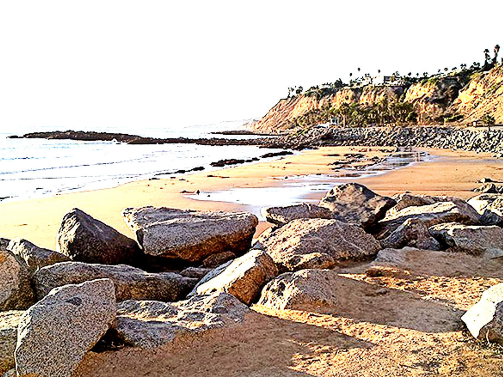
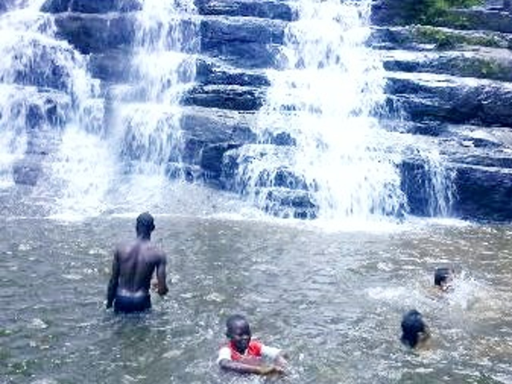

Discover This Beautiful Country
Let's explore beautiful beaches and amazing creatures.
San Pedro
{kind=link}
San Pedro is famous for its historical sites and amazing beaches. You will love seafoods as well as tasty local foods. Our guides will help you explore and deep dive in the city.
Man
{kind=link}
The waterfall of this city is old of thousands of years. Thousands of tourists visit this amazing place every year. the wheather is warm and humid. Have lots of fun! You will also visit the amazing national park of Tai. The park has its primary forest as well as millions of rare animals.
Kong
{kind=link}
Kong is located in the north of the country. The city is known for its historical sites. French colonists left lot of libraries and historical material goods in the city. Multiple sacred sites beautify the city.The historical mosque aged of hundreds of years attracts tourists around the word.
Grand Bassam
{kind=link}
Come and swim in nice beaches at Grand Bassam. Forget your stress and enjoy the nice wheather. Weekends are always busy at Grand Bassam. Visitors come to enjoy the beautiful beaches. It is a lot of fun, good foods, family and friend time.